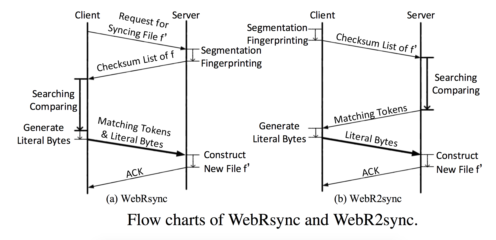
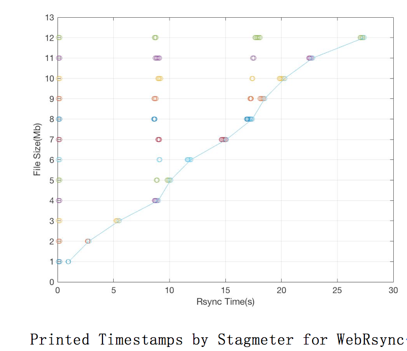

This project strives towards a practical web-based delta sync solution for cloud storage services.
Native Javascript Version of rsync(Tridgell A, Mackerras P. The rsync algorithm[J]. 1996.)
The architecture of WebRsync follows Dropbox’s system architecture. Specifically, we implement the client side based on the HTML5 File APIs and the WebSocket protocol, using 1500 lines of JavaScript codes. The server side is developed based on the node.js framework, using 500 lines of node.js codes and 600 lines of C++ codes.
WebR2sync implements the reverse process of WebRsync by handing the computation-intensive search and comparison operations over to the server side, and meanwhile shifting the lightweight segmentation and fingerprinting operations to the client side. Accordingly, the checksum list of f ′ is generated by the client and the matching tokens are generated by the server, while the literal bytes are still generated by the client. Note that on the server side, the codes of search and comparison operations are written in C/C++ rather than in JavaScript. Therefore, WebR2sync can not only avoid stagnation/crashing for the web client, but also effectively shorten the duration of the whole delta sync process.
Server-side Optimizations based on WebR2sync
Leveraging that edits to a file are typically local, when we find that the i-th chunk of f ′ matches the j-th chunk of f , the (i + 1)-th chunk of f ′ is highly likely to match the ( j + 1)-th chunk of f . Therefore, we “sim- plify” the 3-level chunk searching scheme by directly comparing the MD5 checksums of the (i + 1)-th chunk of f′ and the (j+1)-th chunk of f.
By replacing MD5 with SipHash in our web-based delta sync solu- tion, we manage to reduce the computation complexity of chunk comparison by nearly 6 times.
Stagmeter automates the measurement of stagnation time by integrating a snippet of JavaScript codes (referred to as StagMeter) into the browser. The snippet strives to periodically 2 print the current timestamp on the concerned web page (e.g., the web page that executes delta sync). If the current timestamp (say t) is successfully printed at the moment, there is no stagnation; otherwise, there is a stagnation and then the printing of the current timestamp will be postponed to t′ > t. Thereby, the corresponding stagnation time is calculated as t′ −t.
